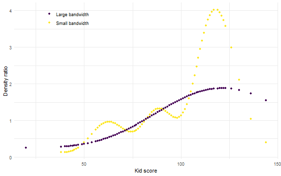

densityratio
Carlos Gonzalez Poses & Thom Benjamin Volker
Source:vignettes/densityratio.Rmd
densityratio.RmdIntroduction
Density ratio estimation is a powerful tool in many applications,
such as two-sample testing, classification, importance weighting and
evaluation of synthetic data utility. Each of these tasks can be
formulated as a problem of distribution comparison, where the goal is to
estimate where and how two distributions differ. The
densityratio package provides a collection of methods for
estimating the density ratio between two distributions. In this
vignette, we will provide an overview of the package and demonstrate how
to use it for distribution comparison tasks.
Features
-
Fast: Computationally intensive code is executed in
C++usingRcppandRcppArmadillo. -
Automatic: Good default hyperparameters that can be
optimized in cross-validation (we do recommend understanding those
parameters before using
densityratioin practice). -
Complete: Several density ratio estimation methods,
such as unconstrained least-squares importance fitting
(
ulsif()), Kullback-Leibler importance estimation procedure (kliep()), ratio of estimated densities (naive()), and extensions for high dimensional data (least-squares heterodistributional subspace search,lhss()and spectral density ratio estimation,spectral()). -
User-friendly: Simple user interface, default
predict(),print()andsummary()functions for all density ratio estimation methods; built-in data sets for quick testing.
Installation
Currently, the package is available through GitHub and R universe. You can download the package like so:
install.packages('densityratio', repos = 'https://thomvolker.r-universe.dev')Subsequently, we can easily load the package in the standard way.
Data
We apply the methods in the densityratio package to the
kidiq data that is introduced in Data analysis using
regression and multilevel/hierarchical models by Gelman and Hill
(2007) and also included in the package. This data set contains 434
observations measured on five variables:
-
kid_scoreChild’s IQ score (continuous) -
mom_hsWhether the mother obtained a high school degree (binary) -
mom_iqMother’s IQ score (continuous) -
mom_workWhether the mother worked in the first three years of the child’s life (1: not in the first three years; 2: in the second or third year; 3: parttime in the first year; 4: fulltime in the first year) -
mom_ageMother’s age (continuous)
For this example, we split the data according to the mother’s education level, and evaluate how the distributions of the two groups differ.
Estimating the density ratio
Now we have the two groups we want to compare, we can evaluate how
the distributions of the two groups differ using the density ratio. That
is, we express differences between the two groups in terms of the ratio
of their densities:
where the subscript refers to the
sample of observations from mothers with a high school degree (hs) or
without (nhs). The density ratio
directly shows how the two distributions differ at each point
in the support of the data. If the density ratio is larger than 1, there
are relatively more observations in the high school group than in the no
high school group at that region, and vice versa if the density ratio is
smaller than one. Key to almost all estimation methods in the
densityratio package, is that we estimate
directly as
,
without estimating the densities
and
separately.
To estimate the density ratio, several estimation functions are included.
-
kmm(): Kernel Mean Matching estimates the density ratio by matching the means of the two distributions in feature space (Huang et al., 2007). -
kliep(): Kullback-Leibler Importance Estimation Procedure estimates the density ratio such that the Kullback-Leibler divergence to the true density ratio function is minimized (Sugiyama et al., 2007). -
ulsif(): Unconstrained Least-Squares Importance Fitting provides an analytical solution for the density ratio by minimizing the least-squares error (Pearson divergence) between the true density ratio and the estimated density ratio (Kanamori et al., 2009). -
lhss(): Least-Squares Heterodistributional Subspace Search extendsulsif()to high-dimensional settings by searching for the subspace where the numerator and denominator densities are most different, and estimating the density ratio in that subspace (Sugiyama et al., 2011). -
spectral(): Spectral density ratio estimation is another high-dimensional extension to classical density ratio estimation approaches that performs dimension reduction through a spectral decomposition in feature space (Izbicki et al., 2014). -
naive(): Naive density ratio estimation through estimating the ratio of the two densities by separate density estimation methods for the two groups.
Which of these functions is most appropriate depends on the problem
at hand, but computational efficiency and relative robustness make
ulsif() a good starting point. For high-dimensional data,
spectral() and lhss() are presumably more
appropriate. All these estimation functions, except
naive(), are based on the same principle of minimizing a
divergence between the true density ratio and the estimated density
ratio, but they differ in the divergence that is minimized and the
constraints that are imposed on the estimated density ratio. These
estimation functions are kernel-based and thereby non-parametric.
Specifically, we use the following linear model for the density ratio:
with the kernel function defined as
where
is the bandwidth of the kernel and
is a vector of parameters that we estimate from the data. While the
model is linear in the parameters, the estimate of the density ratio is
non-linear through the use of the kernel function. Currently, we use
Gaussian kernels for all methods (but we plan to allow for different
kernels in a future version of the package), which uses the following
transformation of the data. Note that the functions lhss()
and spectral() use a slightly more involved transformation
of the data to perform dimension reduction. All estimation functions
typically require extensive tuning of hyperparameters, such as the
bandwidth of the kernel and potentially a regularization parameter. This
tuning is taken care of through in-built cross-validation, such that
very little user-specification is required. Below, we illustrate the
package by estimating the density ratio using ulsif().
Input data
The density ratio package expects two data.frames as input, one for the numerator observations, and one for the denominator observations. These data sets must have the same variables: if this assumption is violated, the function returns an error.
All estimation functions return an object of their respective class
(“ulsif”, “kmm”, “kliep”, and so on). Each method has a separate
S3 class, because of differences in models, hyperparameters
and important information that is included in the object. Still, all
classes have a common interface with print(),
summary() and predict() methods. Printing the
output of the object dr provides some important information
of the fitted model:
dr
#>
#> Call:
#> ulsif(df_numerator = high_school, df_denominator = no_high_school)
#>
#> Kernel Information:
#> Kernel type: Gaussian with L2 norm distances
#> Number of kernels: 200
#> sigma: num [1:10] 0.913 1.216 1.393 1.551 1.71 ...
#>
#> Regularization parameter (lambda): num [1:20] 1000 483.3 233.6 112.9 54.6 ...
#>
#> Optimal sigma (loocv): 1.216132
#> Optimal lambda (loocv): 0.3359818
#> Optimal kernel weights (loocv): num [1:201] 0.3256 -0.054 0.0098 0.1639 0.2047 ...
#> The output shows the number of kernels, the candidate values for the
bandwidth parameter sigma, the candidates for the
regularization parameter lambda and the optimal values of
these parameters, including the weights that can be used to compute the
density ratio for new samples. It is also possible to use different
candidate parameters for the bandwidth and regularization parameter,
which can be done in different ways.
Hyperparameter selection
Specifying the inducing points in the kernel
Kernel-based algorithms are computationally expensive: in the
original form, the distance from observations to every other observation
is used to calculate the density ratio. This means that the
computational cost scales cubically with the number of observations in
the data. To alleviate this issue, we make use of inducing points, which
are a subset of the observations that are used to calculate the distance
matrix. The idea hereof is that we do not use all observations, because
most are relatively close to each other and share similar information.
By default, the estimation functions use 200 inducing points, randomly
sampled from the numerator and denominator data, but this number can be
altered by changing the ncenters parameter. It is also
possible to set the inducing points manually, by providing a
data.frame with the same variables as the input data,
containing the inducing points in the rows, to the centers
argument. If the inducing points are set manually, the
ncenters parameter is ignored.
Bandwidth and regularization parameter
The bandwidth of the kernel and the regularization parameter are
tuned automatically using leave-one-out-cross-validation, which can be
calculated analytically. By default, the candidate bandwidth values are
chosen by taking quantiles of the interpoint distance matrix
corresponding to 10 equally spaced probabilities between 0.05 and 0.95.
Changing the nsigma parameter results in a different number
of quantiles used. The default candidate values for the regularization
parameter lambda are set to
10^{seq(-3, 3, length.out = 20)}. By changing
nlambda, the number of candidate values in this sequence
can be altered, to estimate the optimal hyperparameters with higher
precision.
dr <- ulsif(high_school, no_high_school, nsigma = 20, nlambda = 50)
dr
#>
#> Call:
#> ulsif(df_numerator = high_school, df_denominator = no_high_school, nsigma = 20, nlambda = 50)
#>
#> Kernel Information:
#> Kernel type: Gaussian with L2 norm distances
#> Number of kernels: 200
#> sigma: num [1:20] 0.864 1.082 1.181 1.267 1.346 ...
#>
#> Regularization parameter (lambda): num [1:50] 1000 754 569 429 324 ...
#>
#> Optimal sigma (loocv): 1.345547
#> Optimal lambda (loocv): 0.4941713
#> Optimal kernel weights (loocv): num [1:201] 0.2213 -0.0349 -0.0107 0.0222 -0.0175 ...
#> It is also possible to specify the candidate parameter values
manually. For the bandwidth, this can be done by specifying the
probabilities used in calculation of the quantiles, using
sigma_quantile, or by specifying the bandwidth values
directly, using sigma. For the regularization parameter,
this can be done by specifying the candidate values directly using
lambda.
Other estimation functions have similar arguments, although only
ulsif() and lhss() accept a regularization
parameter.
Intermezzo: Bandwidth & regularization parameter
Bandwidth parameter: The bandwidth parameter controls how flexible the density ratio model is. Smaller values place relatively more weight on observations that are very close to the observation at hand, whereas larger values also borrow information from observations that are further away in feature space. A smaller smaller bandwidth allows to model sudden shifts in the density ratio, but might also be prone to overfitting, while a larger bandwidth results in a smoother estimate. Below, we illustrate this by plotting the estimated density ratio for a single variable,
kid_score, estimated with both a large and a small bandwidth parameter. While both estimates show that the density ratio is larger for larger values ofkid_score, the estimate with the smaller bandwidth parameter is much more flexible and less smooth.Density ratio estimates for a large and small bandwidth parameter.
Regularization parameter: The regularization parameter controls the amount of regularization applied to the model. A larger value of the regularization parameter results in a smoother estimate, while a smaller value allows for more flexibility in the model. This is shown below, where we plot the estimated density ratio for
kid_scoreestimated with both a large and a small regularization parameter. Again, the estimate with the smaller regularization parameter is much more flexible and less smooth. Note, here, that regularization shrinks the kernel weights towards zero, such that the estimated density ratio tends to zero (and not to one, as one might expect). We plan to investigate this further in the future.Density ratio estimates for a large and small regularization parameter.
Scaling of the data
By default, all data is scaled before estimating the density ratio.
Because the density ratio is distance-based, variables with larger
variance may contribute more to the distance, and are thus implicitly
deemed more important in the model, than variables with smaller
variance. By default, the data is scaled such that continuous variables
in the numerator data has mean 0 and variance 1, and categorical
variables (factors and character strings) are turned into dummy
variables (i.e., one-hot encoded). The denominator data is scaled
accordingly, using the means and variances of the numerator data. If
desired, this can be changed by setting the scale argument
to scale = "denominator" to use the denominator means and
variances, or to scale = NULL, to apply no scaling at all.
Additionally, an intercept is added to the model matrix by default. This
can be turned off by setting intercept = FALSE.
Computational efficiency
Parallel computation is natively supported by most functions in the
density ratio package (current exceptions are lhss() and
kliep(), for which storage requirements can defeat speedup
due to parallelization, we aim to solve this in a future version).
Parallel computation can be enabled simply by setting
parallel = TRUE. By default, the number of available
threads minus one is used, but this can be changed by setting the
nthreads argument. Note that the number specified in
nthreads is not only limited by the number of cores on the
machine, but also by the number of hyperparameters than can be estimated
in parallel (such as nlambda).
dr <- ulsif(
high_school,
no_high_school,
parallel = TRUE,
nthreads = 10
)Other estimation functions
In this section, we briefly skim over the other estimation functions available in the package. These functions are all built on the same principles, but use different algorithms with different hyperparameters. These hyperparameters are still tuned automatically, but use -fold cross-validation instead of leave-one-out cross-validation. Although can be set to equal the minimum number of observations in the numerator or denominator data, which yields leave-one-out cross-validation, this might significantly affect the computational cost, because no analytical solution to the loss is available.
kmm()
The kernel mean matching algorithm is quite similar to the
ulsif() algorithm, but starts from a different perspective:
we estimate the density ratio such that reweighing the denominator
samples with the density ratio results in a distribution that is as
similar as possible to the numerator distribution in terms of the L2
norm. This approach does not require tuning of a regularization
parameter, but does require tuning of the bandwidth parameter (the same
defaults as for ulsif() apply). By default,
kmm() uses unconstrained optimization to estimate the
density ratio parameters constrained = FALSE, but this can
be changed to constrained = TRUE to use constrained
optimization. The unconstrained optimization is more efficient, but
might yield negative estimates for the density ratio. Additionally,
cross-validation can be disabled by setting cv = FALSE, and
the number of cross-validation folds can be altered by changing
nfold parameter.
dr_kmm <- kmm(
high_school,
no_high_school,
constrained = TRUE,
nfold = 10,
parallel = TRUE
)
dr_kmm
#>
#> Call:
#> kmm(df_numerator = high_school, df_denominator = no_high_school, constrained = TRUE, nfold = 10, parallel = TRUE)
#>
#> Kernel Information:
#> Kernel type: Gaussian with L2 norm distances
#> Number of kernels: 200
#> sigma: num [1:10] 0.989 1.252 1.444 1.606 1.772 ...
#>
#> Optimal sigma (10-fold cv): 1.606
#> Optimal kernel weights (10-fold cv): num [1:200, 1] 3.16e-04 9.80e-05 -6.06e-05 5.70e-06 -2.26e-04 ...
#>
#> Optimization parameters:
#> Optimization method: Constrained
kliep()
The Kullback-Leibler importance fitting procedure optimizes a
somewhat different loss compared to ulsif() (the
Kullback-Leibler loss, rather than the Pearson loss), and does not
include a regularization parameter. Whereas ulsif() can be
estimated analytically, kliep() uses a gradient descent
algorithm to estimate the parameters. The kliep() function
has some additional arguments for the optimization routine, such as the
maximum number of iterations maxit and the learning rate
epsilon. Again, hyperparameter values and cross-validation
scheme can be altered as described above.
dr_kliep <- kliep(
high_school,
no_high_school,
nsigma = 20,
maxit = 10000,
epsilon = 0.0001
)
dr_kliep
#>
#> Call:
#> kliep(df_numerator = high_school, df_denominator = no_high_school, nsigma = 20, epsilon = 1e-04, maxit = 10000)
#>
#> Kernel Information:
#> Kernel type: Gaussian with L2 norm distances
#> Number of kernels: 200
#> sigma: num [1:20] 0.914 1.11 1.207 1.298 1.377 ...
#>
#> Optimal sigma (5-fold cv): 0.9142
#> Optimal kernel weights (5-fold cv): num [1:200, 1] 0.278 0.0659 0.0434 0.1052 0.2286 ...
#>
#> Optimization parameters:
#> Learning rate (epsilon): 1e-04
#> Maximum number of iterations: 10000
lhss()
The lhss() function implements the least-squares
heterodistributional subspace search, which is a high-dimensional
extension to ulsif(). Rather than applying
ulsif() to the original input data, lhss()
first finds a lower-dimensional subspace where the numerator and
denominator samples are maximally different, and then applies
ulsif() to the data projected to this subspace. Note that
this subspace is a linear projection of the original data. This method
works well if such a subspace indeed exists, but might not be optimal if
such a linear projection cannot capture the differences between the two
distributions. Parameters for lhss() are similar to those
for ulsif(), although the bandwidth values are by default
obtained after the projection (that is, nsigma and
sigma_quantile are applied to the projected data, but
sigma is considered as is). One parameter that is specific
to lhss() concerns the dimensionality of the subspace,
which can be set by changing m, which defaults to the
square root of the number of features in the data. Because the algorithm
is quite expensive computationally, no optimization with respect to the
subspace is carried out. Different choices can be considered by running
the algorithm with different values of m, but this requires
multiple calls to the lhss function. Currently, no parallel
computation is supported for lhss(), but this is planned
for a future version, together with native support for optimizing the
dimension of the subspace. Furthermore, the function uses a gradient
descent algorithm to find the subspace: the number of iterations used
defaults to maxit = 200 but can be adapted by the user.
dr_lhss <- lhss(
high_school,
no_high_school,
m = 1
)
dr_lhss
#>
#> Call:
#> lhss(df_numerator = high_school, df_denominator = no_high_school, m = 1)
#>
#> Kernel Information:
#> Kernel type: Gaussian with L2 norm distances
#> Number of kernels: 200
#> sigma: num [1:10, 1:10] 0.00514 0.04845 0.13661 0.27564 0.4775 ...
#>
#> Regularization parameter (lambda): num [1:10] 1000 215.44 46.42 10 2.15 ...
#>
#> Subspace dimension (m): 1
#> Optimal sigma: 0.1366127
#> Optimal lambda: 0.1
#> Optimal kernel weights (loocv): num [1:201] 1.3467 0 0.1011 0.0874 0 ...
#>
spectral()
The spectral() method offers an alternative way to estimate the
density ratio in high-dimensional settings. Instead of reducing the
dimensionality before applying a kernel, it first applies a kernel to
the denominator data and performs an eigen decomposition to find a
low-dimensional representation. As computing this eigen decomposition is
computationally expensive, it is also possible to use only a subset of
the denominator data to compute this eigen decomposition (by setting the
parameter ncenters, similarly to the other functions). The
density ratio is then estimated in this reduced space by matching the
numerator data to the denominator data. The goal is to find weights such
that, when applied to the denominator data in kernel space, the
resulting distribution closely resembles the numerator distribution.
Similarly to lhss(), the spectral() function
has a parameter m that determines the dimensionality of the
subspace, which defaults to an evenly-spaced sequence of length 50
between 1 and the number of centers in the denominator data (or the size
of the subset used). Again, cross-validation is used to find the optimal
value of m and the optimal bandwidth parameter. The number
of folds can be altered using the nfold parameter, and
cross-validation can be disabled by setting cv = FALSE.
Also, parallel computation is supported, and can be enabled by setting
parallel = TRUE, potentially with a different number of
threads using the nthreads parameter.
dr_spectral <- spectral(
high_school,
no_high_school
)
dr_spectral
#>
#> Call:
#> spectral(df_numerator = high_school, df_denominator = no_high_school)
#>
#> Kernel Information:
#> Kernel type: Gaussian with L2 norm distances
#> Number of kernels: 93
#> sigma: num [1:10] 1.01 1.28 1.47 1.65 1.82 ...
#>
#>
#> Subspace dimension (J): num [1:50] 1 2 4 6 7 9 11 12 14 16 ...
#>
#> Optimal sigma: 3.215855
#> Optimal subspace: 16
#> Optimal kernel weights (cv): num [1:16] 0.952 -0.461 -0.755 -0.559 -0.342 ...
#>
naive()
Naive density ratio estimation estimates the density ratio by
estimating the numerator and denominator densities separately. We use a
singular value decomposition to account for relationships between the
features, estimated on the numerator data and project the denominator
data onto the same subspace. As such, dimension reduction is readily
implemented. Subsequently, we make use of the naive Bayes assumption,
implying independence of the features, to estimate the density ratio on
the latent space. Hence, the naive() function has a
parameter m that determines the dimensionality of the
subspace, which defaults to the number of variables in the data (no
dimension reduction). Additionally parameters are inherited from the
density() function, which is used to estimate the numerator
and denominator densities. Note that we do not advice this method, it is
merely included as a benchmark.
dr_naive <- naive(
high_school,
no_high_school,
m = 2
)
dr_naive
#>
#> Call:
#> naive(df_numerator = high_school, df_denominator = no_high_school, m = 2)
#>
#> Naive density ratio
#> Number of variables: 4
#> Number of numerator samples: 341
#> Number of denominator samples: 93
#> Numerator density: num [1:341] 3.82 2.43 5.32 2.09 4.13 ...
#> Denominator density: num [1:93] 0.459 0.417 0.629 1.823 0.434 ...
#> Summarizing the density ratio objects
The densityratio package contains several functions to
help interpreting the output of each estimation method. The
summary() function provides a brief summary of the
estimated object, including the optimal hyperparameter values, the
number of inducing points and the divergence between the numerator and
denominator samples.
summary(dr)
#>
#> Call:
#> ulsif(df_numerator = high_school, df_denominator = no_high_school, parallel = TRUE, nthreads = 10)
#>
#> Kernel Information:
#> Kernel type: Gaussian with L2 norm distances
#> Number of kernels: 200
#>
#> Optimal sigma: 1.387557
#> Optimal lambda: 0.6951928
#> Optimal kernel weights: num [1:201] 0.16916 0.00301 0.05082 -0.00791 0.03594 ...
#>
#> Pearson divergence between P(nu) and P(de): 0.4149
#> For a two-sample homogeneity test, use 'summary(x, test = TRUE)'.Which divergence measure is reported depends on the method used. The
ulsif(), kmm(), lhss() and
spectral() methods report the Pearson divergence, while the
kliep() method reports the Kullback-Leibler divergence. The
naive() method reports the squared difference between the
average log density ratio of the numerator samples and the average log
density ratio of the denominator samples. As these divergences are hard
to interpret in isolation and provide relatively little information on
where the two distributions differ, we recommend to use the plotting
functionality that is described in the next section. Alternatively, if
the goal is to evaluate the distributions more formally, the divergence
measures can be used for two-sample homogeneity testing.
Two-sample homogeneity testing
Two sampling testing functionality is readily implemented in the
summary() function, and can be used by setting
test = TRUE. For each estimation function, homogeneity
testing is performed using a permutation test on the divergence
statistic, and the corresponding
-value
is reported.
summary(dr, test = TRUE)
#>
#> Call:
#> ulsif(df_numerator = high_school, df_denominator = no_high_school, parallel = TRUE, nthreads = 10)
#>
#> Kernel Information:
#> Kernel type: Gaussian with L2 norm distances
#> Number of kernels: 200
#>
#> Optimal sigma: 1.387557
#> Optimal lambda: 0.6951928
#> Optimal kernel weights: num [1:201] 0.16916 0.00301 0.05082 -0.00791 0.03594 ...
#>
#> Pearson divergence between P(nu) and P(de): 0.4149
#> Pr(P(nu)=P(de)) < .001
#> Bonferroni-corrected for testing with r(x) = P(nu)/P(de) AND r*(x) = P(de)/P(nu).This permutation test shows that it is highly unlikely that the high school and no high school samples are drawn from the same distribution. Intuitively, this is no surprise, as it is quite likely that the two samples have different marginal distributions for the features.
The permutation test can also be executed in parallel, by setting
parallel = TRUE. Parallel computation is performed using
the pbreplicate function from the pbapply
package. To specify the cluster, users can directly create and supply a
cluster using the parallel::makeCluster() functionality
(see the documentation in the pbapply and
parallel packages). If no cluster is supplied, a default
cluster is created using the number of available cores minus one.
summary(dr, test = TRUE, parallel = TRUE, cluster = 12)
#>
#> Call:
#> ulsif(df_numerator = high_school, df_denominator = no_high_school, parallel = TRUE, nthreads = 10)
#>
#> Kernel Information:
#> Kernel type: Gaussian with L2 norm distances
#> Number of kernels: 200
#>
#> Optimal sigma: 1.387557
#> Optimal lambda: 0.6951928
#> Optimal kernel weights: num [1:201] 0.16916 0.00301 0.05082 -0.00791 0.03594 ...
#>
#> Pearson divergence between P(nu) and P(de): 0.4149
#> Pr(P(nu)=P(de)) < .001
#> Bonferroni-corrected for testing with r(x) = P(nu)/P(de) AND r*(x) = P(de)/P(nu).Visualizing the density ratio
When mere testing is not sufficient, visualizing the density ratio
can provide more tangible information on the differences between the two
distributions. The plot() function summarizes the model
output by displaying the estimated density ratio values.
plot(dr)
#> `stat_bin()` using `bins = 30`. Pick better value with `binwidth`.The figure shows the distribution of density ratio values for the numerator and denominator samples (on a log-scale, to improve symmetry). This allows to evaluate how dissimilar the two distributions are: the more the density ratio values are separated, the more the two groups stand apart. That is, if the two distributions are very similar, the density ratio will be close to zero on the log-scale (one on the original scale) for all samples, regardless of the group, but more importantly, the height of the bars will be similar for both groups at all density ratio values.
Additionally, it is possible to plot the estimated density ratio
values against the features, both univariate and bivariate. This may
help to identify features, or combinations of features, on which the two
groups differ. For example, below we plot the density ratio values
against kid_score and mom_iq in a grid (by
specifying grid = TRUE, the default
grid = FALSE produces a list with separate figures for each
feature).
plot_univariate(dr, c("kid_score", "mom_iq"), grid = TRUE)kid_score and
mom_iq against the estimated density ratio values for the
two groups of samples.This figure shows that the density ratio values do not seem to vary
so much with kid_score, but do differ substantially with
mom_iq. That is, for kid_score, the samples of
the two groups mix quite well, although there might be slightly more
no high school samples with a lower kid_score,
resulting in slightly lower density ratio values in this region. For
mom_iq this difference is much more pronounced: lower
values of mom_iq are typically associated with lower
density ratio values, indicating that there are typically more
no high school samples with lower mom_iq
values.
Similar figures can be created for bivariate features, by using the
plot_bivariate() function, which allows to visualize the
density ratio values against two features at the same time. Now, the
density ratio values are mapped to the color scale.
plot_bivariate(dr, c("kid_score", "mom_iq", "mom_age"), grid = TRUE)kid_score, mom_iq and mom_age,
with density ratio values mapped to the color scale.This figure shows that density ratio values are especially small for
observations with low values for both mom_iq and
kid_score. The values do not differ so much in the
direction of mom_age.
Predicting the density ratio for new cases
Under the hood, the plotting functionality makes extensive use of the
predict() function, which takes a fitted density ratio
object and a new data set as input, and returns the predicted density
ratio values for these new cases. By default, the predict()
function predicts the density ratio values for the numerator samples,
but this can be changed by providing another data set in the
newdata argument.
predict(dr) |> head()
#> , , 1
#>
#> [,1]
#> [1,] 1.4928033
#> [2,] 2.2715889
#> [3,] 2.5855672
#> [4,] 1.9345356
#> [5,] 1.9679638
#> [6,] 0.7939163By default, the predict() function uses the optimal
hyperparameter values as determined by cross-validation (if
cross-validation is performed, otherwise it returns the predicted
density ratio values for all parameters). By changing the parameters
sigma (and, if applicable, lamdba or
m), it is also possible to predict the density ratio using
different parameters. These values can alternatively be set to “all”,
which returns the predicted density ratio values for all parameter
values, or a specific value, which returns the predicted density ratio
values for that specific hyperparameter value.
Conclusion
This vignette showed how the densityratio package can be
used to compare samples from two distributions. This allows for two
sample homogeneity testing, and to visualize the differences between the
two distribution.
References
Huang, J., Smola, A., Gretton, K., Borgwardt, K. M., & Schölkopf, B. (2007). Correcting sample selection bias by unlabeled data. Advances in Neural Information Processing Systems, 19, 601-608.
Izbicki, R., Lee, A., & Schafer, C. (2014). High-dimensional density ratio estimation with extensions to approximate likelihood computation. Proceedings of Machine Learning Research, 33, 420-429.
Kanamori, T., Hido, S., & Sugiyama, M. (2009). A least-squares approach to direct importance estimation. Journal of Machine Learning Research, 10, 1391-1445.
Sugiyama, M., Nakajima, S., Kashima, H., Von Bünau, P., & Kawanabe, M. (2007). Direct importance estimation with model selection and its application to covariate shift adaptation. Advances in Neural Information Processing Systems, 20.
Sugiyama, M., Yamada, M., Von Bünau, P., Suzuki, T., Kanamori, T., & Kawanabe, M. (2011). Direct density-ratio estimation with dimensionality reduction via least-squares hetero-distributional subspace search. Neural Networks, 24(2), 183-198.